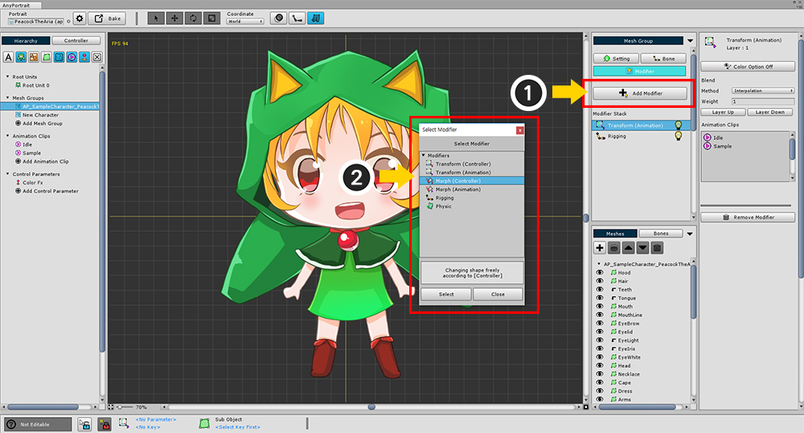

AnyPortrait > マニュアル > カラーアニメーションのモディファイア
カラーアニメーションのモディファイア
1.0.0

モディファイアを使用すると、カラーエフェクトを適用してキャラクタに色効果を与えることができます。
次のモディファイアは、カラー効果を適用できます。
Transform (Controller)
Transform (Animation)
Morph (Controller)
Morph (Animation)
色効果については、TransformとMorphは同じ処理をしているので、必要に応じて使用します。
Transform (Controller), Morph (Controller)モディファイアから色を適用する

これは制御パラメータを使用してメッシュグループ に色の効果を指定する方法です。
(1) メッシュグループ の設定の「Color Option」をオンに変更します。
(2) 現在の制御パラメータの「キーセット」の「Color Option」を入れます。

編集モードを有効にするには、(1) 画面上部のカラープロパティを開き、(2) 色を指定します。
Transform (Animation), Morph (Animation)モディファイアから色を適用する

アニメーションの色効果を適用する方法です。
(1) メッシュグループ の設定の「Color Option」をオンにします。

(1) アニメ編集モードをオンにし、(2) 画面の上部または (3) キーフレームのUIでキーフレームの色属性を選択します。
カラーエフェクトの適用方法
AnyPortraitで使用される色処理式は、2X Multiplyです。
"結果の色" = "Texture" x "色" x 2
この方法は、最大2倍の明るさや暗さを持つことができるため、「Multiply」と「Additive」エフェクトを包括的に実装できます。
したがって、デフォルトの色は白ではなく、グレー(0.5, 0.5, 0.5, 1)です。
ただし、アルファチャンネルには「Multiply」メソッドが使用されているため、モディファイアが重なると透明になる機能があります。